Search The JARVEE Knowledge Base
Sharing a post from your page to your groups is one way to grow your social media accounts. But on Instagram, there is no such magic button. Fortunately, you can easily do this using Jarvee’s Instagram Repost tool.
How do you share a post on Instagram through Jarvee?
First things first, go to Tools page < More Tools < Repost tool. The Repost tool has 3 tabs just like most of the IG tools in Jarvee. You have the Settings, Sources and Results tab.
SETTINGS
- It has 5 sections – Run Timers, Repost Limits, Post Filters, Repost Settings, Post Caption Text
- This is where you plan on how the tool will implement the repost action with respect to the settings you have configured.
Run Timers section:
Wait between X-Y minutes before each new operation — is the amount of time the Repost tool is going to wait before it starts a new operation.
Repost between X-Y posts per operation — is the number of posts the tool is going to process for every operation
Delay between X-Y seconds between each repost — is the number of seconds that the tool will wait before executing another repost action during each operation.

Execute between X-Y hours — is the hours when the tool is going to execute. You can add an interval for the tool’s execution hours; this is like adding a random sleep time for the tool where it would not execute any repost actions during certain hours.
Days of the Week When To Operate — from here you can set the days when you want the tool to operate.
 You have the option to ‘Rotate Days’ such that if you initially chose to repost on Monday, Wednesday and Friday, the following week, it would pick random 3 days (being you originally chose 3 days to execute) from the other days of the week. Hence, it could execute on ‘Tuesday, Friday, Saturday’ and so on. If you don’t want the tool to execute on Weekends, you can tick the option ‘Exclude Weekend’.
You have the option to ‘Rotate Days’ such that if you initially chose to repost on Monday, Wednesday and Friday, the following week, it would pick random 3 days (being you originally chose 3 days to execute) from the other days of the week. Hence, it could execute on ‘Tuesday, Friday, Saturday’ and so on. If you don’t want the tool to execute on Weekends, you can tick the option ‘Exclude Weekend’.
Repost Limits section:
Repost maximum of X-Y per day — this is where you set the maximum number of reposts the tool will execute per day. You can increase the maximum number each day until it reaches your preferred max repost per day.
Repost users most recent X posts — if you only want to repost the users (your source) most recent X posts, this is where you set it.
Limit maximum number of reposts per user — this enables you to limit the maximum number of posts you will repost from a user for the entire time that the tool is running.
User Filters section:
Before reposting, you can use various User Filters. These user filters will allow you to only repost content from specific users that pass the user filters you set.
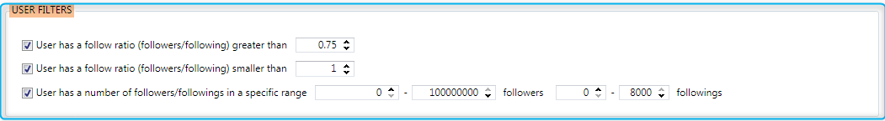
User has a follow ratio (followers/following)greater than — you can use this filter to only repost content if a user has a follow ratio greater than x value you set.
User has a follow ratio (followers/following)smaller than — you can use this filter to only repost content if a user has a follow ratio smaller than x value you set.
User has a number of followers/followings in a specific range — you can use this filter to only repost content if a user has a number of followers/followings in a specific range you set.
Post Filters section:
These are the conditions that each post has to meet before they get reposted. If the post fails any of the filters you set, it will be skipped, so be sure not to use strict filters, else you will have fewer results.
- You may choose to repost only: Images, Videos, ImageOrVideo, Albums (these are multiple image posts) or All (image, video, albums).
- From the type of posts you want to repost, you can further filter it by indicating the when the post was published, number of likes and comments the post received.
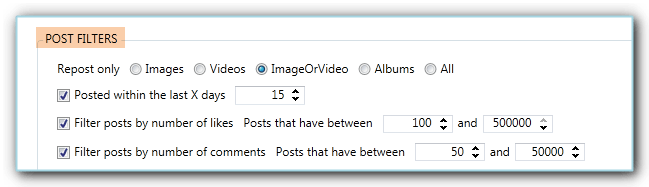
- You can also select to only repost those posts that have a specific keyword in the caption as well as ignore posts that have a certain keyword (bad or negative keyword) in it.
- If there is a certain user you don’t want to repost from, perhaps a competing account, you can add the username to the Blacklist option.
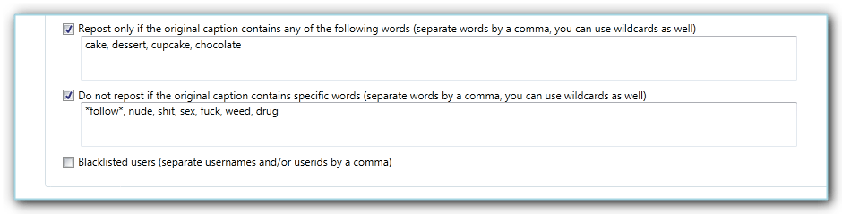
Additionally, you also have other Post filters as shown in the image below:
- If there are non-English posts that you do not want to repost, you can enable the option “Do not repost Non-English posts”
- You can also repost if the engagement is greater than x % than average.
- If you want to repost videos based on duration, you have the option to “Repost video only between x – y seconds duration”
- Lastly, you can also filter video by the number of views.
Repost Settings section:
On this part of the Settings tab, you will see the various options you can use to customize your repost such as tagging.
Tag original poster — while it is not mandatory, giving credit where it is due remains a best practice
Tag users mentioned in original post caption — when you enable this filter you can tag users mentioned in the original post caption. If you do not want that specific user to be tagged make sure to add the usernames and make sure to click ‘ADD BLACKLISTED USERNAMES’
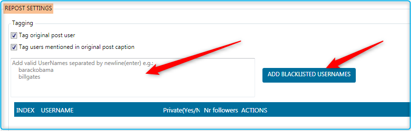
Tag specific users in your post — here you can add specific users to tag in your post
✅ Please note that 20 is the max number of users you can tag in addition to the tagged users of the original post.
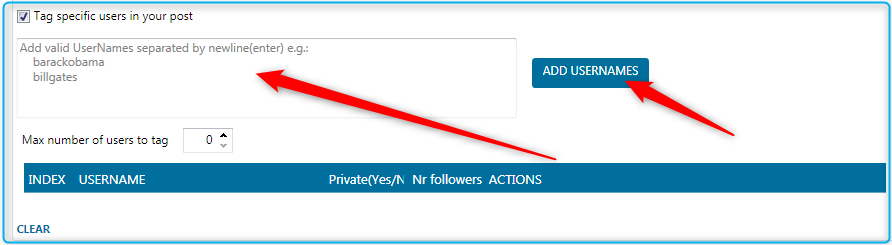
Send posts to campaign
When checked, the tool will not repost directly to your wall or story, instead, it will send the scraped posts to a campaign (select the campaign where it will send the post via the Campaign drop-down option).
Also, when sending repost to campaign, you can send it to Drafts tab instead of the Posts List tab.
There are two ways to do this
- Send the repost without starting the Repost tool by clicking the ‘Send To Campaign Button Now’ (you can also select to send posts to drafts for)
- Send the repost to the campaign per each operation
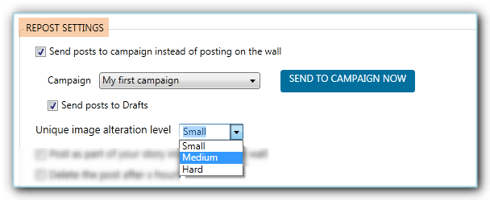
Unique Image Alteration — this will modify the image depending on the level you choose(Low = not noticeable; Medium = hardly noticeable; Hard = slightly noticeable)
Post as part of your story instead of on the wall — please note that if you select this option, the repost will disappear after 24 hours.
Post on wall and in story — use this option is you want to post on both your wall and in your story; you can also share wall post in story.
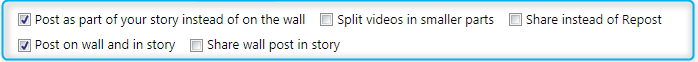
Share with specific users instead of post on the wall — use this option is you want to share the posts to specific users instead of posting them on the wall.
- Add your message, you can use multi-level spin syntax to make your messages more unique.
- Add the specific usernames you want to share the posts with.
- Make sure to click ‘ADD USERNAMES’ to add them properly.
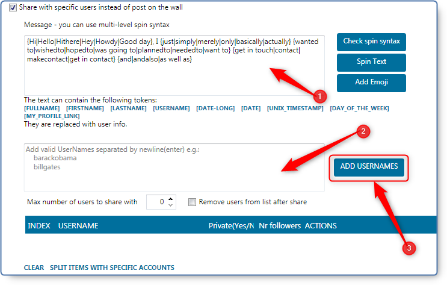
Delete the post if the caption is empty — use this option if Instagram decides to not show the caption after the post is posted
Delete the post after X hours — you can use this option if you want the repost to get automatically deleted after some time
Crop image instead of adding white border — use this option if you want the image to be cropped from the center when it has an aspect ratio that is not accepted by Instagram
Choose a random post from the most recent user’s post
Repost original post location
Repost original video cover — when checked, the repost tool will use the original video cover and not a random video cover when reposting
Change Profile Picture after repost — use this option if you want to change the profile picture to the image that is being reposted.
Enable Watermark — here you can add watermarks on your post whether image or text.
Mute videos — when checked, it will turn off the sound of the reposted video.
Disable comments after Repost — when checked, this will disable the comments on your reposted posts.
Post image as video — use this option if you want to post an image as a 3-second video. This is useful if you have accounts with low trust scores that get their images deleted after posting.
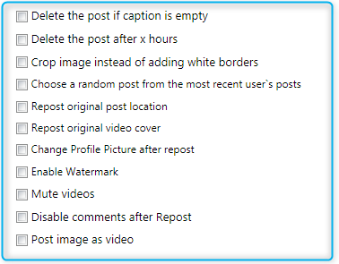
Post Caption Text section:
As part of customizing your repost, you can add your own caption to posts that will be scraped prior to reposting on your account. You can use multi-level spintax for the randomness of your post caption as well as Tokens.
For Tokens, it will be replaced by the corresponding information unique to the post. You can mouse over each token to know more about what information it will replace.
If you want the hashtag to be published as the first comment on your repost, use the token [COMMENT] in the Post Caption Text box, just make sure that you add the said token at the end of your caption text.
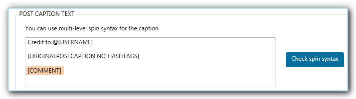
You have Enable Find and Replace which will search for the keyword you specify the designated box and replace it with the word you want.
The Enable Dynamic Hashtag option works the same way when used in publishing a post via Campaign. Using this option, you can set up a pool of hashtags and a limit that you would want Jarvee to pick and add to the end of the post. You have two lists of hashtags and if you add keywords to both boxes, Jarvee will take random hashtags from each list.

SOURCES
This is the Repost tool tab that you click on to indicate where the tool will search for posts to repost on your account. Just like how you set the sources on the other Instagram tools, you’ll just need to select the sources you want to use and add the keyword or target account and so on to the respective boxes.
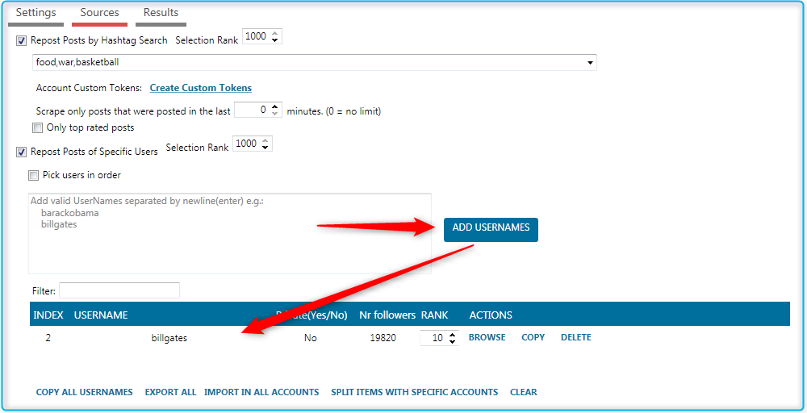
Repost posts by hashtag search — will search for the keywords in the caption of the posts that Instagram returned (For multiple keywords use ‘,’ as a separator, for example: Cars, Stores, BMW). In addition, you can opt to scrape the posts which have been posted in the last X minutes.
Repost on Posts of Specific Users – just like it says, it will search on the posts of the users you added as target account/s for this source. You also get to choose if you want repost from the users based in order of how you’ve added them in the list, such that on the 1st operation, it will pick user1 and user2 (depending on your Settings) then user3 and user4 on the 2nd operation and so on.
You can click ‘Copy All Usernames’ if you want to save a copy (in Notepad or whatever you use) for future reference. If you want to split your sources with other accounts, you can click on ‘Split Items With Specific Accounts’ and ‘Clear’ is if you want to delete all the usernames on the list.
Repost on Posts of Friends of Target Accounts — Jarveewill search in the posts of either the followers or followings (depending on your preference) of specific usernames you put in this source
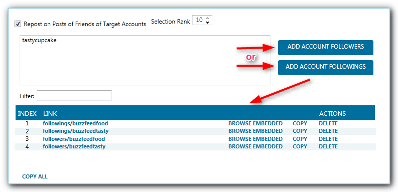
Repost posts you liked – will check on posts that you liked
Repost saved posts – use this option when you want to repost previously saved posts. You can choose to ‘Unsave post after it gets reposted’
Repost using Geo Location – Jarvee will search for posts that have the location/s you specified. You can either Select the location (by ticking the checkbox of the location) from the drop-down option
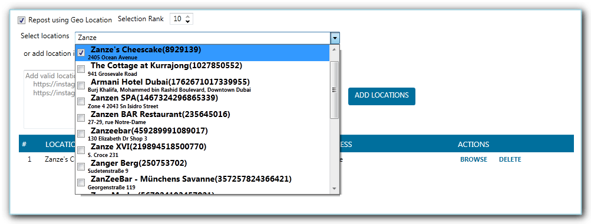
Or by manually adding the Location ID
Repost specific posts based on post URL – if there is a specific post that you want to repost, you can add the post URL. This source will ignore the filters you’ve set in the Settings tab. Moreover, you have the option to use the caption text you indicated in the Settings tab or create a different caption text for the repost from this particular source.
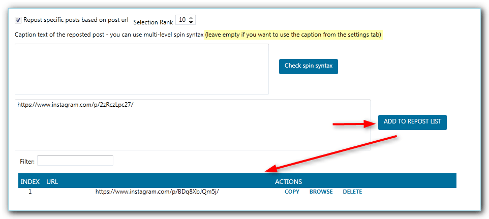
Repost Posts that tagged Specific Users – will search for posts that tagged specific users in the photo, not in post caption.
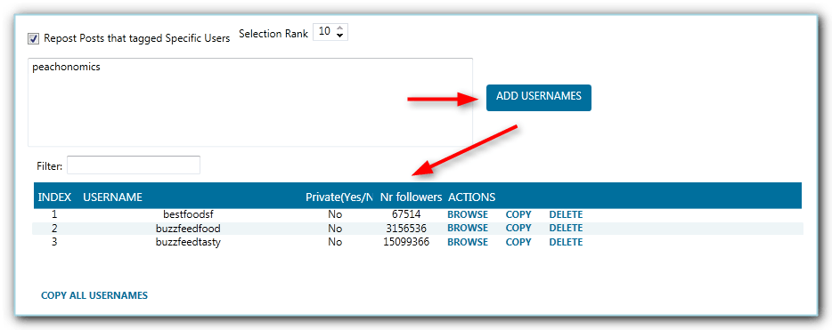
Repost posts that tagged your account – should you wish to share the posts where you were tagged, you can use this source.
Repost From explore page – the Instagram Explore Page is different from every single user, and it’s made of both posts you’ve liked and post liked by people whose photos and videos you’ve liked.
Repost Stories of Specific Users – use this option to repost stories of specific users, make sure to click ‘ADD USERNAMES’ button to add the usernames in the index.
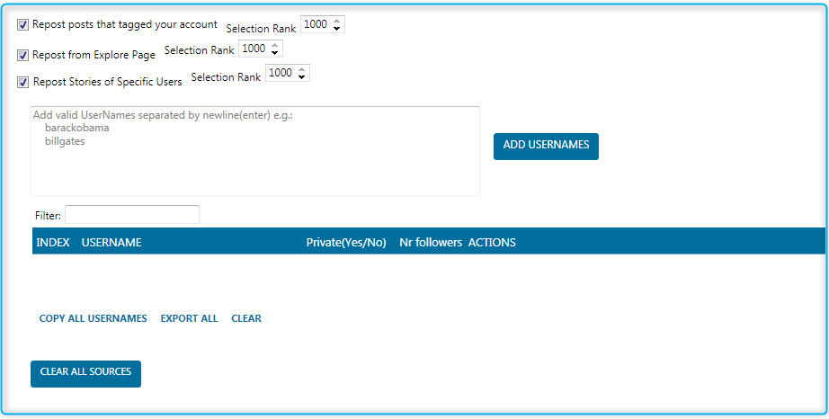
You can click on Clear All Sources button if you want to have a clean slate for your Sources tab.
Starting the Repost Tool
When you’re done configuring your Settings and Sources, you can go back to the Settings tab and turn the switch ON.
RESULTS
To see the results of the Repost Tool, just go to the Results tab.
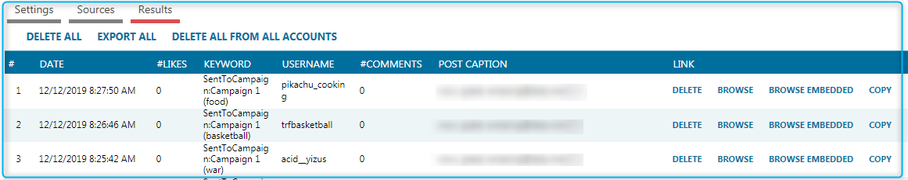
📌 Things to remember:
— For Repost Source, the key is to use as many sources as you can, refresh and replenish your sources every 2-3 weeks for better results and added randomness.
— Since the sources are randomly picked per operation, if there is a particular source that you want to prioritize or increase the chances of being selected, you can set a higher ‘Selection Rank’ for that source (1000 being the highest).
— If you want to have more control over what will be reposted on your account, send your repost to a campaign rather than reposting directly from the tool.
— Make sure that the reposting account is showing a Valid status in Social Profiles and the proxy (if any) attached to the account has a fast and stable connection at all times.